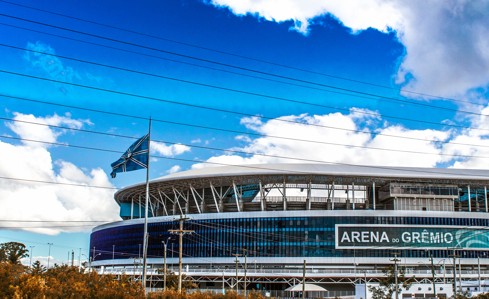

O Grêmio transformou um Gre-Nal decisivo em uma das noites mais importantes de sua campanha na Copa do Brasil de 2026 e da sua história na sua nova casa, inaugurada em 2012. Nesta quinta-feira, em 3 de setembro, diante do Inter, o Tricolor venceu por 3 a 1 e garantiu a classificação para a semifinal da competição nacional. Carlos Vinícius marcou duas vezes ainda no primeiro tempo, Krovinovic ampliou na etapa final e Vitinho descontou para o Colorado.
A classificação ganhou um peso adicional pelo contexto do confronto. Grêmio e Internacional haviam empatado por 0 a 0 no primeiro jogo das quartas de final, disputado em 27 de agosto no Beira-Rio. Isso deixou a decisão completamente aberta para a volta: quem vencesse na Arena avançaria diretamente, enquanto um novo empate levaria a disputa adiante conforme o regulamento da competição. O Grêmio não precisou dessa alternativa. Venceu no tempo normal e fechou o confronto com 3 a 1 no placar agregado.
Carlos Vinícius decide ainda no primeiro tempo
O Internacional começou a partida buscando ocupar o campo ofensivo e criou oportunidades nos primeiros minutos. Alan Patrick finalizou para defesa de Weverton logo no início, e Matheus Bahia também obrigou o goleiro gremista a trabalhar. A diferença, porém, apareceu na eficiência.
Aos 13 minutos, Carlos Vinícius abriu o placar para o Grêmio. Apenas oito minutos depois, aos 21, o centroavante voltou a marcar e colocou o Tricolor em uma situação extremamente favorável na eliminatória. Em um clássico que começou sem vantagem no agregado, o 2 a 0 construído antes da metade da primeira etapa mudou completamente o cenário da decisão.
O Internacional ainda buscou a reação. Alan Patrick levou perigo em finalizações de média distância e Bernabei também exigiu intervenção de Weverton. O goleiro gremista teve participação importante para preservar a vantagem construída pelo ataque e impedir que o rival diminuísse a diferença antes do intervalo.
A atuação de Carlos Vinícius, por sua vez, colocou o atacante no centro da classificação. Em uma partida de enorme peso esportivo, seus dois gols deram ao Grêmio a possibilidade de conduzir o restante do confronto de acordo com o placar.
Krovinovic amplia e encaminha classificação
O Inter tentou aumentar a pressão no segundo tempo, mas encontrou um Grêmio preparado para explorar os espaços deixados pelo rival.
Aos 22 minutos da etapa final, o croata Krovinovic marcou o terceiro gol gremista. O 3 a 0 praticamente resolveu a eliminatória e obrigou o Internacional a buscar uma reação ainda mais improvável no trecho final do clássico.
O Colorado conseguiu diminuir aos 33 minutos. Alan Patrick cruzou e Vitinho apareceu para marcar o gol. Na sequência, o time visitante ainda criou oportunidades, incluindo tentativas de Carbonero e Villagra, mas Weverton voltou a aparecer com defesas importantes. O placar permaneceu em 3 a 1 até o apito final.
Veja os melhores momentos da partida abaixo:
Recorde de público da Arena
A vitória por 3 a 1 também ficou marcada fora das quatro linhas. O Gre-Nal 454, registrou 55.695 torcedores na Arena do Grêmio, o maior público da história do estádio em partidas oficiais. Foram 55.376 pagantes e 319 não pagantes, com renda de R$ 5.459.371,27.
A marca superou justamente outro jogo histórico de Copa do Brasil. Até então, o recorde em partidas oficiais pertencia ao empate por 1 a 1 entre Grêmio e Atlético-MG, na final da edição de 2016, quando 55.337 pessoas estiveram na Arena. Assim, além de eliminar o maior rival e chegar à semifinal, o Grêmio viveu a maior presença de público do estádio em um jogo oficial desde sua inauguração, em dezembro de 2012.
Grêmio supera rival pela primeira vez em um mata-mata nacional
O resultado também ganhou dimensão histórica porque os dois clubes tinham se enfrentado apenas uma vez anteriormente em um mata-mata da Copa do Brasil.
O encontro anterior aconteceu em 1992, também pelas quartas de final. Naquela edição, os dois jogos terminaram empatados por 1 a 1. A decisão foi para os pênaltis no Beira-Rio, e o Internacional venceu a disputa por 3 a 0, avançando em uma campanha que terminaria com o título colorado.
Assim, a edição de 2026 marcou a primeira classificação gremista sobre o maior rival dentro da Copa do Brasil. Mais de três décadas depois daquele encontro de 1992, o Tricolor conseguiu mudar o retrospecto do clássico no torneio nacional.
A própria história dos dois clubes ajuda a explicar o peso do confronto. O Internacional conquistou a competição em 1992. Já o Grêmio construiu uma relação ainda mais longa com a competição.
Tradição copeira do Imortal
A Copa do Brasil ocupa um espaço especial na história gremista. O clube conquistou cinco títulos: 1989, 1994, 1997, 2001 e 2016. Além disso, a edição de 2026 levou o Tricolor pela 22ª vez às quartas de final desde a criação da competição, em 1989.
Com a classificação sobre o Internacional em 2026, o Grêmio chegou à semifinal da Copa do Brasil pela 17ª vez e igualou o Flamengo como clube com mais participações entre os quatro melhores na história da competição. Das 16 semifinais anteriores, o Tricolor avançou oito vezes para a decisão.
Premiação aumenta com classificação à semifinal
Além do peso esportivo da vitória no Gre-Nal, a classificação também teve impacto financeiro importante. A vaga na semifinal rendeu mais R$ 9 milhões ao Grêmio, que chegou a R$ 18 milhões acumulados em premiações na Copa do Brasil de 2026.
O valor pode aumentar consideravelmente na sequência. Se superar o Atlético-MG e avançar à decisão, o Tricolor garantirá pelo menos mais R$ 34 milhões, premiação destinada ao vice-campeão, chegando a R$ 52 milhões acumulados. Em caso de título da Copa do Brasil, a premiação da final sobe para R$ 78 milhões e o Grêmio poderá encerrar a competição com R$ 96 milhões recebidos ao longo de sua campanha.
O adversário na semifinal
Com a classificação no Gre-Nal, o Grêmio avançou para enfrentar o Atlético-MG nas semifinais da Copa do Brasil. O clube mineiro também garantiu presença entre os quatro melhores depois de superar o maior rival estadual em outro clássico de enorme peso.
A definição das quartas de final ainda colocou outros dois clubes na disputa pelo título. O Vasco confirmou sua classificação fora de casa, no Barradão. O Palmeiras também entrou no grupo dos quatro sobreviventes depois de segurar o Santos na Vila Belmiro.
Dessa forma, a vitória gremista sobre o Internacional passou a integrar uma rodada de quartas marcada por clássicos, rivalidades estaduais e decisões de enorme peso. Para o Grêmio, pentacampeão do torneio, eliminar justamente o maior rival e seguir vivo na busca por mais uma final acrescentou um capítulo especial à campanha de 2026.
As semifinais estão previstas para as semanas dos dias 1º e 8 de novembro. Datas exatas, horários e ordem dos mandos ainda dependiam da definição detalhada da CBF após a conclusão das quartas de final. A edição de 2026 também traz uma mudança importante em sua reta final: diferentemente das semifinais, disputadas em ida e volta, a decisão do título será realizada em jogo único, previsto no calendário da CBF para 6 de dezembro.
Mais do que uma vitória em clássico
O 3 a 1 sobre o Internacional entra para a história do Gre-Nal por reunir elementos que ultrapassam os três pontos ou uma vitória isolada. Era um mata-mata nacional, o confronto estava completamente aberto depois do 0 a 0 da ida e havia uma vaga entre os quatro melhores da Copa do Brasil em disputa.
O Grêmio resolveu a partida com eficiência. Carlos Vinícius transformou as oportunidades do primeiro tempo em dois gols, Krovinovic ampliou na etapa final e Weverton apareceu quando o Internacional tentou construir uma reação. O resultado eliminou o rival, colocou o Tricolor na semifinal e acrescentou um novo capítulo à longa relação gremista com a Copa do Brasil.
Para um clube pentacampeão do torneio, avançar novamente até a semifinal já tem significado esportivo relevante. Fazer isso derrotando o maior rival por 3 a 1 em um Gre-Nal decisivo tornou a classificação de 2026 ainda mais marcante.